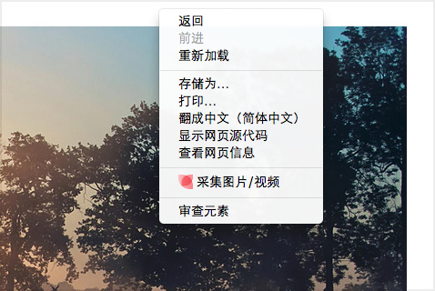

Chrome 浏览器
你还可以选择安装
书签栏采集工具
如何使用花瓣 Chrome 扩展？
方法一
浏览网页时，看到页面上感兴趣的图片、网页、视频，点击右上角的花瓣图标，选择相应功能进行采集。

方法二
浏览网页时，把鼠标停留在你喜欢的图片上，点击右键，选择“采集到花瓣”（此方法不起作用时，推荐方法一）

Firefox（火狐）浏览器
安装花瓣 Firefox 附加组件
你还可以选择安装
书签栏采集工具
如何使用花瓣 Firefox 附加组件
方法一
浏览网页时，看到页面上感兴趣的图片、网页、视频，点击右上角的花瓣图标，选择相应功能进行采集。

方法二
浏览网页时，把鼠标停留在你喜欢的图片上，点击右键，选择“采集到花瓣”（此方法不起作用时，推荐方法一）

IE 浏览器
你还可以选择安装
花瓣 IE 插件
使用方法
拖动上面的按钮到你的书签栏上。浏览网页时，点击书签栏上的“采集到花瓣”即可。

其它浏览器